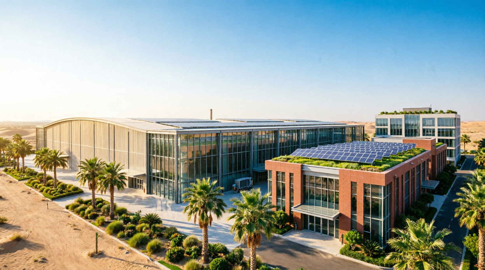
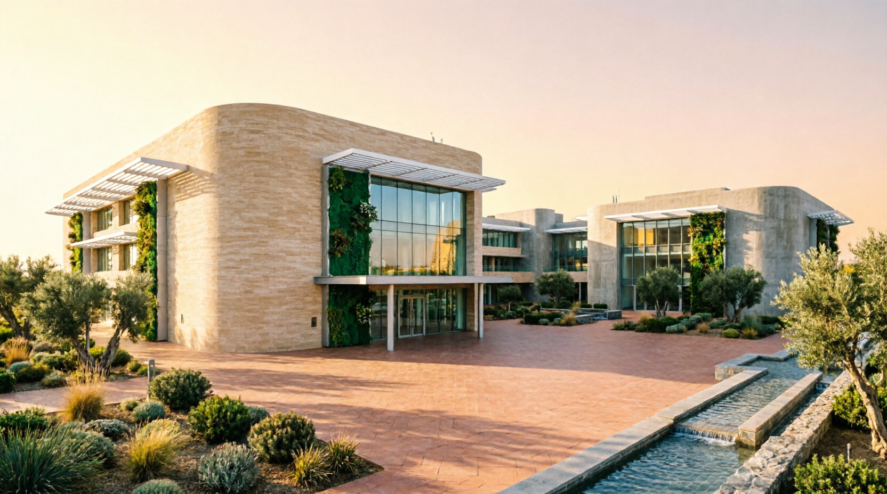
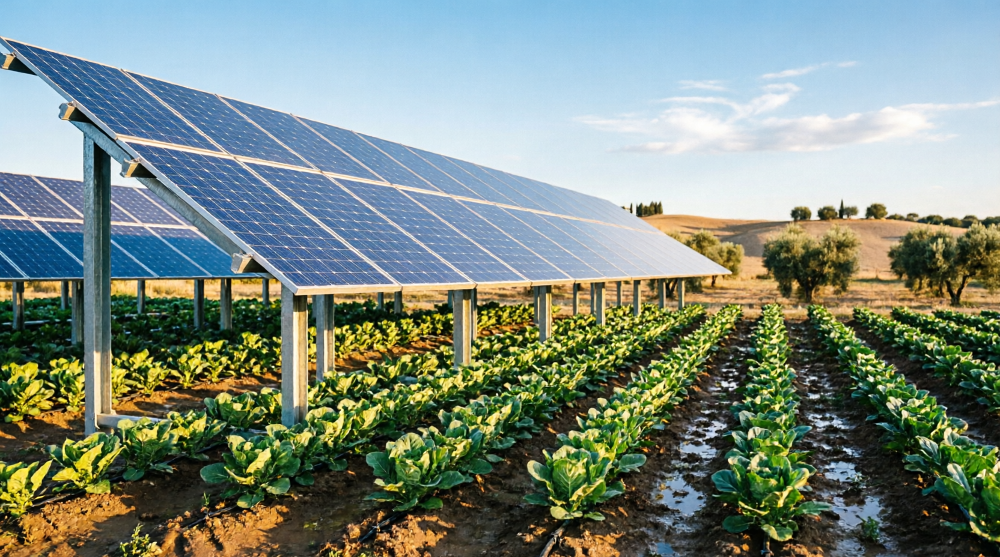
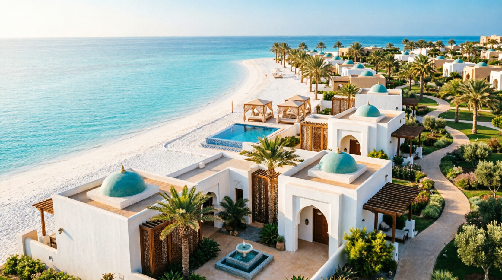
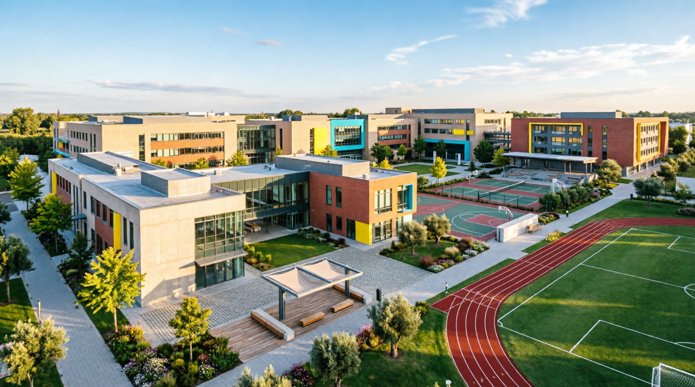
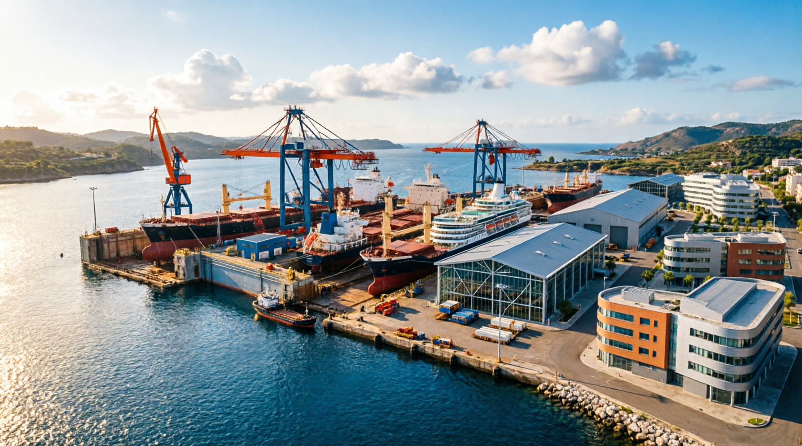
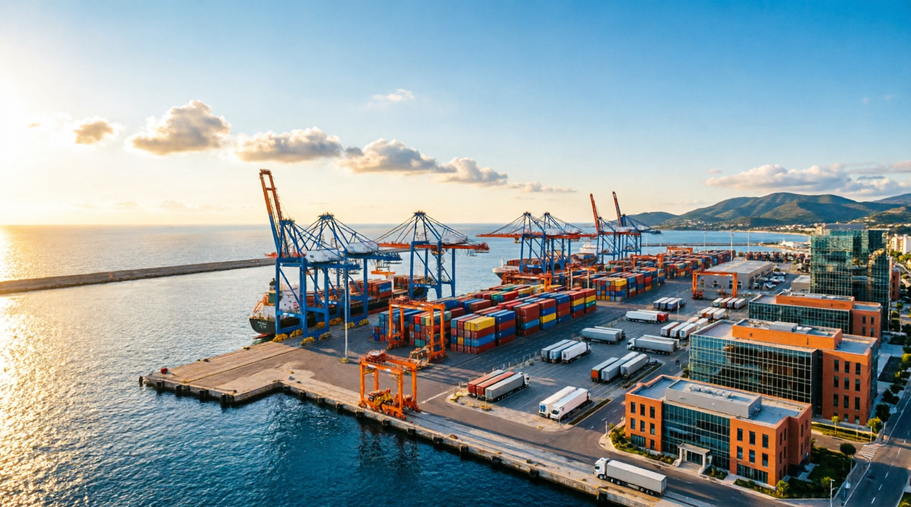

المهندس عبدالكريم السيد – خبرة 39 عاماً في إدارة المشاريع الكبرى
مجموعة من المشاريع التنموية والاستثمارية المقترحة لدعم إعادة الإعمار والنهضة الاقتصادية في سوريا.

مشروع صناعي استراتيجي لإنتاج ألياف البازلت عالية القوة. يخدم قطاعات البناء، السيارات، والطيران. يشمل دراسة المواد الخام، خطوط الإنتاج، وتحليل الأسواق.
السعودية · سوريا صناعي استراتيجي
دراسة جدوى إنشاء مشافي متطورة للسياحة العلاجية في سوريا. تشمل تحديد التخصصات الطبية، تصميم الأقسام، حساب التكاليف، وإعداد خطة تشغيلية.
سوريا · سياحي صحي · سياحي
دمج الألواح الشمسية مع الزراعة لزيادة الإنتاجية وتقليل التكاليف. يشمل تصميم نظام PV، دراسة تأثير الظل، وحساب العائد الطاقي والزراعي.
سوريا · ريفي طاقة · زراعة
مشروع سياحي ضخم يستهدف العائلات المحافظة. يشمل تصميم وحدات فندقية متوافقة مع الخصوصية، مرافق منفصلة، ودراسة الخدمات الترفيهية.
تركيا · سوريا سياحي فاخر
مشروع تعليمي متكامل يشمل تصميم مدارس عالمية المستوى، مع دراسة احتياجات السوق، تحديد المناهج، وإعداد خطة تشغيلية قابلة للتوسع.
سوريا تعليمي
دراسة جدوى وتصميم ترسانة متكاملة لصيانة السفن، تشمل تحديد المعدات، التجهيزات، وإعداد خطة تشغيلية تدعم قطاع النقل البحري.
سوريا · ساحلي بحري
مشروع لتطوير البنية التحتية للموانئ، يشمل دراسة الأعمال الإنشائية، أنظمة التحميل والتفريغ، وتحسين الكفاءة التشغيلية.
سوريا · ساحلي بنية تحتية